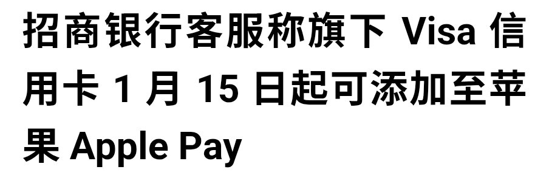

奶昔🥤
@realNyarime
说明Apple Pay添加CN卡被银联独占10年结束了。
不过，尽管可以添加到Apple Pay了，也只是广大网友钱包APP里面的一张赛博卡片吧
国内刷外卡还是很难刷的... 大部分甚至拍卡都用不了，需要使用实体卡插入并输入密码授权
只有像银联商务UMS收单的POS机才能支持拍一下，但是这东西的普及率在中国内地太低了
我觉得要反思一下，为什么中国选择了二维码，而不是NFC拍卡？

Aoxzh
@aoxzh
都以为内地第一批能绑定 Apple Pay 的外卡组织是 Amex 或者 Master，结果居然是没人民币清算资格的 VISA ？ https://t.co/qq55AlcLk0